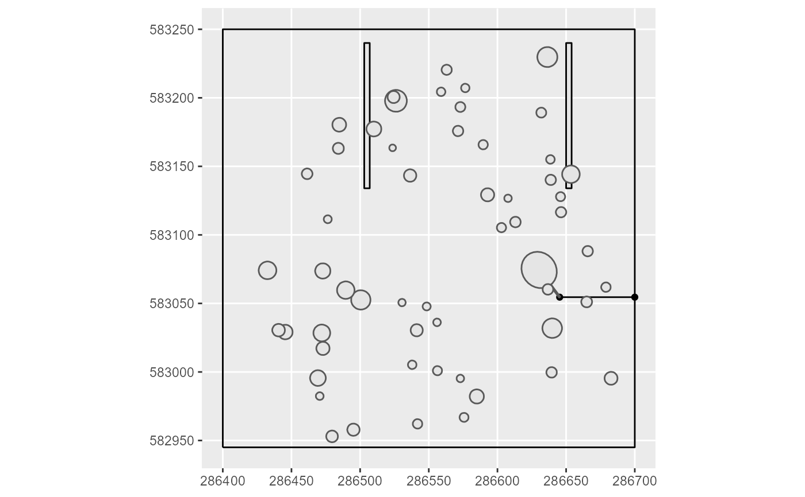

Simulates the tree (multipolygon) falling towards the trail or
not, at a given angle. If it has been decided to exploit fuel wood, the tree
crowns will be directed towards the trail if they can be accessed with a
grapple (see the GrappleLength argument of the
loggingparameters function). In other cases, the fall will be
made from the base of the tree towards the trail. The orientation of the
fall succeeds or fails according to a Bernoulli law where the probability of
success is by default 60%, and can be changed with the
advancedloggingparameters argument.
felling1tree( dat, fuel, directionalfelling, MainTrail, ScndTrail, FutureReserveCrowns, advancedloggingparameters = loggingparameters() )
| dat | 1 row data.frame with columns: Xutm, Yutm, CrownDiameter, CrownHeight, DBH, TrunkHeight, TreeHeight, TreeFellingOrientationSuccess |
|---|---|
| fuel | Fuel wood exploitation: no exploitation = "0", exploitation of damage and unused part of logged trees for fuel = "1", exploitation of hollow trees, damage and and unused part of the log for fuel = "2" |
| directionalfelling | Directional felling = "0": only to direct the foot of the tree towards the trail "1": to direct the foot of the tree towards the trail + to avoid damage to future and reserve trees "2": to avoid damage to future and reserve trees + orientation angle to the trail |
| MainTrail | (sfg) |
| ScndTrail | (sfg) |
| FutureReserveCrowns | Future/reserve trees crown (sf) |
| advancedloggingparameters | Other parameters of the logging simulator
|
A list with: FallenTree: a MULTIPOLYGON of the tree oriented according to the chosen scenario. Foot: a point for the base of the tree (the rotation fixed point). NearestPoints: a linestring for the shortest path from the base of the tree to the nearest trail, Trail: the union of the main and the secondary trails. TrailPt: the point on the Trail closest to the location of the tree.
MainTrail <- sf::st_linestring(matrix(c(286400, 582945, 286400, 583250, 286700, 583250, 286700, 582945, 286400, 582945) # the return ,ncol=2, byrow=TRUE)) pol1 <- list(matrix(c(286503, 583134, 286503, 583240, 286507, 583240, 286507, 583134, 286503, 583134) # the return ,ncol=2, byrow=TRUE)) pol2 <- list(matrix(c(286650, 583134, 286650, 583240, 286654, 583240, 286654, 583134, 286650, 583134) # the return ,ncol=2, byrow=TRUE)) PolList = list(pol1,pol2) #list of lists of numeric matrices ScndTrail <- sf::st_multipolygon(PolList) inventory <- addtreedim(inventorycheckformat(Paracou6_2016), volumeparameters = ForestZoneVolumeParametersTable) inventory <- suppressMessages(treeselection(inventory, objective = 20, scenario ="manual", fuel = "2", diversification = TRUE, specieslax = FALSE, objectivelax = TRUE, topography = DTMParacou, plotslope = PlotSlope, speciescriteria = SpeciesCriteria, advancedloggingparameters = loggingparameters())$inventory) FutureReserveCrowns <- inventory %>% # create an object with future/reserve crowns only dplyr::filter(LoggingStatus == "future" | LoggingStatus == "reserve") %>% createcanopy() %>% # create all inventory crowns in the 'Crowns' column getgeometry(Crowns) inventory <- inventory %>% dplyr::filter(Selected == "1") %>% dplyr::select(idTree,DBH,TrunkHeight,TreeHeight,CrownHeight, CrownDiameter,Selected, Xutm, Yutm) dat <- inventory[1,] %>% # just 1 row (1 tree) # force the orientation success for the exemple tibble::add_column(TreeFellingOrientationSuccess = "1") rslt <- felling1tree(dat, fuel = "0", directionalfelling = "2", MainTrails = MainTrail, ScndTrail = ScndTrail, FutureReserveCrowns = FutureReserveCrowns, advancedloggingparameters = loggingparameters()) library(ggplot2) ggplot() + geom_sf(data = rslt$Foot) + geom_sf(data = rslt$Trail) + geom_sf(data = rslt$NearestPoints) + geom_sf(data = rslt$TrailPt) + geom_sf(data = rslt$FallenTree) + geom_sf(data = FutureReserveCrowns)